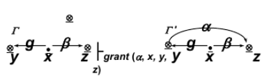
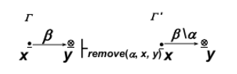
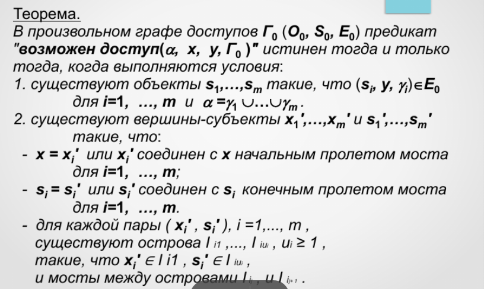

17. Дискреционное управление доступом. Модели HRU и Take-Grant. Задача проверки безопасности системы защиты от НСД.
Модели дискреционного доступа
Политика дискреционного доступа охватывает самую многочисленную совокупность моделей разграничения доступа, реализованных в большинстве защищенных КС, и исторически является первой, проработанной в теоретическом и практическом плане.
Модели дискреционного доступа непосредственно основываются и развивают субъектно-объектную модель КС как совокупность некоторых множеств взаимодействующих элементов (субъектов, объектов и т. д.).
Множество (область) безопасных доступов в моделях дискреционного доступа определяется дискретным набором троек "Пользователь (субъект)-поток (операция)-объект".
Права доступа предоставляются («прописываются» в специальных информационных объектах-структурах, ассоциированных с монитором безопасности), отдельно каждому пользователю к тем объектам, которые ему необходимы для работы в КС.
При запросе субъекта на доступ к объекту монитор безопасности, обращаясь к ассоциированным с ним информационным объектам, в которых «прописана» политика разграничения доступа, определяет «легальность» запрашиваемого доступа и разрешает/отвергает доступ
Механизмы реализации дискреционного разграничения доступа Различаются:
- в зависимости от принципов и механизмов программно-информационной структуры объекта(объектов), ассоциированных с монитором безопасности, в которых хранятся «прописанные» права доступа (тройки доступа)
- в зависимости от принципа управления правами доступа, т.е. в зависимости от того – кто и как заполняет/изменяет ячейки матрицы доступа (принудительный и добровольный принцип управления доступом).
Проблема безопасности в КС рассматривается с точки зрения анализа и исследования условий, правил, порядка и т. п. разрешений запросов на доступ, при которых система, изначально находясь в безопасном состоянии, за конечное число переходов перейдет также в безопасное состояние.
модель на основе матрицы доступа: - матрица определяющая права субъекта по отношению к объекту
- централизованная или децентрализованная:
- при централизованной: матрица доступа создается как отдельный самостоятельный объект с особым порядком размещения и доступа к нему, она может достигать очень больших величин, и, кроме того, подвержено динамическому изменению. В большинстве систем при централизованном подходе строки матрицы доступа характеризуют не субъектов, а непосредственно самих пользователей и их группы, зарегистрированные для работы в системе.
- при децентрадизованной: матрица доступа как отдельный объект не создается, а представляется или так называемыми "списками доступа", распределенными по объектам системы, или так называемыми "списками возможностей", распределенными по субъектам доступа.
- с понятием владения объектами (тогда владелец сам задаёт права доступа для других) или без понятия владения (тогда админ всем заправляет)
Модели HRU (Харрисона-Руззо-Ульмана)
одна из формальных моделей управления доступом субъектов (пользователей) к объектам, реализованная с помощью матрицы доступов -- матрица с полным описанием пользовательских прав к файлам. Изменения в эту матрицу вводятся с помощью специальных команд.
Введем некоторые обозначения: S - множество субъектов; O - множество объектов; - множество прав доступа; Строки матрицы доступа M соответствуют субъектам, столбцы объектам. Текущее состояние системы Q однозначно записывается тройкой Q=(S,O,M)
Для того, чтобы был возможен переход из Q=(S,O,M) в Q'=(S',O',M') нужно ввести некоторые элементарные операции. Для этой цели в данной модели существует шесть операторов op:
- Enter r into M(s,o) - ввести право r в ячейку M(s,o);
- Delete r from M(s,o) - удалить право r из ячейки M(s,o);
- Create subject s - создать субъект s (т.е. новую строку матрицы M);
- Create object o - создать объект o (т.е. новый столбец матрицы M);
- Destroy subject s - уничтожить субъект s;
- Destroy object o - уничтожить объект o;
Условия выполнения и новое состояние системы записаны в виде таблицы

Системы в модели HRU Любая система в модели HRU характеризуется матрицей доступа M, конечным количеством прав , объектов , субъектов и операций . Система является монооперационной, если каждая команда данной системы выполняет лишь одну элементарную операцию op.
Критерий безопасности системы Для заданной системы исходное состояние называется безопасным относительно права r, если не существует такой последовательности команд, которая изменила бы заданное начальное состояние системы так, что право r записалось бы в ячейку M(s,o), в которой оно отсутствовало в начальном состоянии . Если это условие не выполнено, то произошла утечка информации
Теоремы:
- Существует алгоритм, проверяющий исходное состояние монооперационной системы на безопасность относительно права r.
- Задача определения безопасности исходного состояния системы общего вида для данного права r является неразрешимой. (Чтобы доказать данную теорему, достаточно свести задачу определения безопасности к задаче остановки машины Тьюринга, которая является заведомо неразрешимой.)
Преимущества HRU
- Простота и наглядность, так как для данной модели не требуется сложных алгоритмов.
- Эффективность в управлении, так как возможно управление правами пользователей с точностью до операции.
- Сильный критерий безопасности.
Недостатки HRU
- Не существует алгоритма проверки на безопасность для произвольной системы.
- Уязвимость к атаке с помощью троянского коня, так как в данной модели не существует контроля за потоками информации между субъектами.
Модель Take-Grant
Система защиты представляет совокупность следующих множеств:
- множество исходных объектов
- множество исходных субъектов , при этом
- множество прав, которые м.б. даны субъектам по отношению к объектам
- право take (t – право брать права доступа у какого-либо объекта по отношению к другому объекту)
- право grant (g – право предоставлять права доступа к определенному объекту другому субъекту)
- множеством E установленных прав доступа (x, y,) субъекта x к объекту y с правом из конечного набора прав.
При этом состояние системы представляется графом доступов Г(O,S,E)

Состояние системы (Графа доступов) изменяется под воздействием элементарных команд 4-х видов:
- Команда "Брать" – take(, x, y, z): субъект x берет права доступа на объект z у объекта y

- Команда "Давать" – grant(, x, y, z): субъект x дает объекту y право на доступ к объекту z

- Команда "Создать" – create(, x, y): субъект x создает объект y с правами доступа на него β R (y – новый объект, O'=O {y}), в т. ч. с правами t, или g, или {t, g}.

- Команда "Изъять" – remove(, x, y): субъект x удаляет права доступа на объект y

Безопасность системы рассматривается с точки зрения возможности получения каким-либо субъектом прав доступа к определенному объекту (в начальном состоянии такие права отсутствуют) при определенной кооперации субъектов путем последовательного изменения состояния системы на основе выполнения элементарных команд.
Рассматриваются две ситуации – условия санкционированного, т.е. законного получения прав доступа, и условия «похищения» прав доступа.
Обозначения: ├с – переход графа Г в новое состояние Г ' по команде c ;
Определения:
Для исходного состояния системы и прав доступа R предикат "возможен доступ(, x, y, )" является истинным тогда и только тогда, когда существуют графы доступов системы такие, что: , и (x, y, ) , где c1, c2, …, cN – команды переходов
Вершины графа доступов являются tg-связными (соединены tg-путем), если в графе между ними существует такой путь, что каждая дуга этого пути выражает право t или g (без учета направления дуг)
- Для исходного состояния системы и прав доступа R предикат "возможно похищение (, x, y, )" является истинным тогда и только тогда, когда существуют графы доступов системы т такие, что: , , и (x, y, ) , где c1, c2, …, cN – команды переходов; при этом, если (s, y, ) , то , выполняется: c1 grant(, s, z, y).
Теоремы:
В графе доступов , содержащем только вершины-субъекты, предикат "возможен доступ(, x, y, )" истинен тогда и только тогда, когда выполняются следующие условия:
- существуют субъекты такие, что для i=1, …, m и .
- субъект х соединен в графе tg-путем с каждым субъектом для i=1, …, m
Еще одна теорема на слайде


В произвольном графе доступов предикат "возможно похищение (, x, y, )" истинен тогда и только тогда, когда выполняются условия:
- (x, y,)
- существуют субъекты такие, что для i=1, …, m и .\
- являются истинными предикаты "возможен доступ(t, x, )" для i=1, …, m.
Достоинства дискреционных моделей
- Хорошая гранулированность защиты (позволяют управлять доступом с точностью до отдельной операции над отдельным объектом)
- Простота реализации
Недостатки дискреционных моделей
- Слабые защитные характеристики из-за невозможности для реальных систем выполнять все ограничения безопасности
- Проблема "троянских коней"
- Сложности в управлении доступом из-за большого количества назначений прав доступа
Задача проверки системы от несанкционированного доступа
Защита информации от несанкционированного доступа (НСД) - деятельность, направленная на предотвращение получения защищаемой информации заинтересованным субъектом с нарушением установленных правовыми документами или собственником, владельцем информации прав или правил доступа к защищаемой информации. Несанкционированный доступ к информации (НСД) - доступ к информации, нарушающий правила разграничения доступа с использованием штатных средств, предоставляемых средствами вычислительной техники или автоматизированными системами. Организация защиты информации - содержание и порядок действий, направленных на обеспечение защиты информации. Система защиты информации - совокупность органов и (или) исполнителей, используемой ими техники защиты информации, а также объектов защиты, организованная и функционирующая по правилам, установленным соответствующими правовыми, организационно -распорядительными и нормативными документами в области защиты информации Средство защиты информации - техническое, программное средство, вещество и (или) материал, предназначенные или используемые для защиты информации Средство контроля эффективности защиты информации - техническое, программное средство, вещество и (или) материал, предназначенные или используемые для контроля эффективности защиты информации Потоком информации между объектом и объектом называется произвольная операция над объектом , реализуемая в субъекте и зависящая от . **Монитор порождения субъектов (МПС) — субъект, активизирующийся при любом порождении субъектов. Монитор безопасности субъектов (МБС)* — субъект, который разрешает порождение потоков только для фиксированного подмножества пар активизирующих субъектов и объектов-источников.
Потоки информации в рамках субъектно-объектной модели документа либо легальны (множество потоков L), либо нелегальны (множество потоков N), т.е. нарушают целостность или конфиденциальность.
Требования к МБО - монитору безопасности:
- полнота и непрерывность (он работает всегда и его не обойти)
- изолированность (монитор должен быть защищён)
- верифицируемость (нужно уметь проверить корректность монитора)